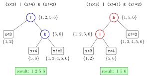

Logical Operators¶
Definition¶
The logical operators combine logical vectors element by element:
| Operator | Name | TRUE when |
|---|---|---|
A & B |
and | both A and B are TRUE |
A | B |
or | at least one of A, B is TRUE |
!A |
not | A is FALSE |
They are vectorized, so (x < 6) & (x > 2) returns one logical value per element of x. In an expression without parentheses, ! is applied first, then &, then |: A | B & C means A | (B & C). Comparisons are evaluated before all three, so !x > 2 means !(x > 2).
Interpretation¶
Logical operators build compound questions out of simple comparisons. "Between 2 and 6" is not one comparison but two, joined by "and": (x > 2) & (x < 6). "Below 2 or above 5" is (x < 2) | (x > 5), and ! turns any condition into its opposite.

The figure shows how R reads the same three conditions in two ways, for x <- c(1, 2, 3, 4, 5, 6). On the left, (x < 3) | (x > 4) & (x != 2) is read as (x < 3) | ((x > 4) & (x != 2)): the condition x != 2 only restricts the right-hand part, so 2 slips through via x < 3 and the selection is 1, 2, 5, 6. On the right, parentheses group the | first, so x != 2 applies to the whole selection and the result is 1, 5, 6.
The rule "and before or" is the same as "times before plus" in arithmetic, and it has the same cure: when in doubt, write the parentheses. The operators also match the operations on sets: if each condition picks a set of positions, & gives the intersection, | the union and ! the complement; | is an inclusive "or", true also when both parts are true.
With missing values, R answers whenever the answer does not depend on the unknown value: TRUE | NA is TRUE and FALSE & NA is FALSE, while TRUE & NA is NA.
A frequent confusion is between & and && (and between | and ||). The doubled versions compare a single TRUE or FALSE and are meant for the condition of an if–else statement; for vectors, always use the single & and |.
Key Results¶
&,|and!work element-wise and return a logical vector of the same length as their inputs.- Precedence:
!before&before|.A | B & CisA | (B & C), not(A | B) & C. !(A & B)equals!A | !B, and!(A | B)equals!A & !B; for example,!((x > 2) & (x < 6))is the same as(x <= 2) | (x >= 6).- With
NA:TRUE | NAisTRUE,FALSE & NAisFALSE, andTRUE & NA,FALSE | NAand!NAareNA. &&and||take a single logical value on each side; recent versions of R stop with an error when a longer vector is given.
Examples¶
1. And, or, not. Three basic combinations on the same vector.
x <- c(1, 2, 3, 4, 5, 6)
# less than 6 AND greater than 2
(x < 6) & (x > 2)
#> [1] FALSE FALSE TRUE TRUE TRUE FALSE
# less than 2 OR greater than 5
(x < 2) | (x > 5)
#> [1] TRUE FALSE FALSE FALSE FALSE TRUE
# NOT equal to 4
!(x == 4)
#> [1] TRUE TRUE TRUE FALSE TRUE TRUE
!(x == 4) gives the same vector as x != 4.
2. Precedence decides the result. The same three comparisons, grouped in two ways.
x <- c(1, 2, 3, 4, 5, 6)
# less than 3 OR (greater than 4 AND not equal to 2)
x[(x < 3) | (x > 4) & (x != 2)]
#> [1] 1 2 5 6
# (less than 3 OR greater than 4) AND not equal to 2
x[((x < 3) | (x > 4)) & (x != 2)]
#> [1] 1 5 6
Without the extra parentheses, x != 2 is joined to x > 4 only, and since 2 already satisfies x < 3 it stays in the selection. This is the computation in the figure.
3. Three-valued logic with NA. R only answers NA when the unknown value could change the answer.
TRUE | NA
#> [1] TRUE
FALSE & NA
#> [1] FALSE
TRUE & NA
#> [1] NA
c(TRUE, FALSE, NA) & c(TRUE, TRUE, TRUE)
#> [1] TRUE FALSE NA
Whatever the missing value is, TRUE | NA is true and FALSE & NA is false. In the last line, the third position cannot be decided.
4. A condition and its negation. Counting both sides is a quick check that a negation is right.
x <- c(1, 2, 3, 4, 5, 6)
inside <- (x > 2) & (x < 6)
outside <- (x <= 2) | (x >= 6)
x[inside]
#> [1] 3 4 5
x[outside]
#> [1] 1 2 6
identical(!inside, outside)
#> [1] TRUE
Negating "greater than 2 and less than 6" turns the & into | and each comparison into its opposite, as in De Morgan's laws for sets.
Prerequisites¶
Related Concepts¶
- Membership Operator %in%
- Counting with Logical Vectors
- Missing Values
- Intersection of Sets
- Union of Sets
Sources¶
- Programming for EOR · Week 2
- Lecture 2 script, Part 1 (Conditional Operations and Sequences), section Combining conditions with AND, OR, and NOT
Aliases: AND OR NOT in R, &, |, !, boolean operators, operator precedence, combining conditions Keywords: &, |, !, and, or, not, precedence of & over |, parentheses
Last updated: 10 November 2026 16:43
Logical OperatorsCounting with Logical VectorsCore dplyr Verbsif–else StatementMembership Operator %in%while LoopComparison OperatorsLogical SubsettingMissing ValuesIntersection of SetsUnion of Sets